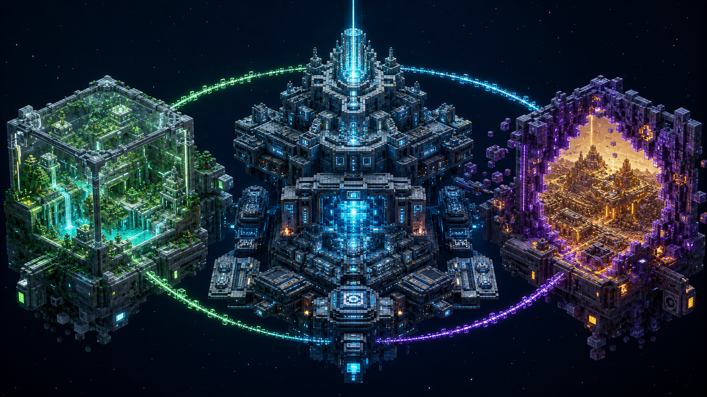
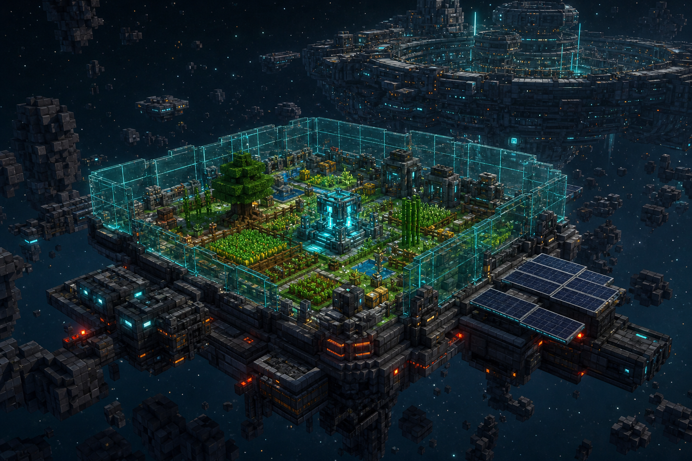
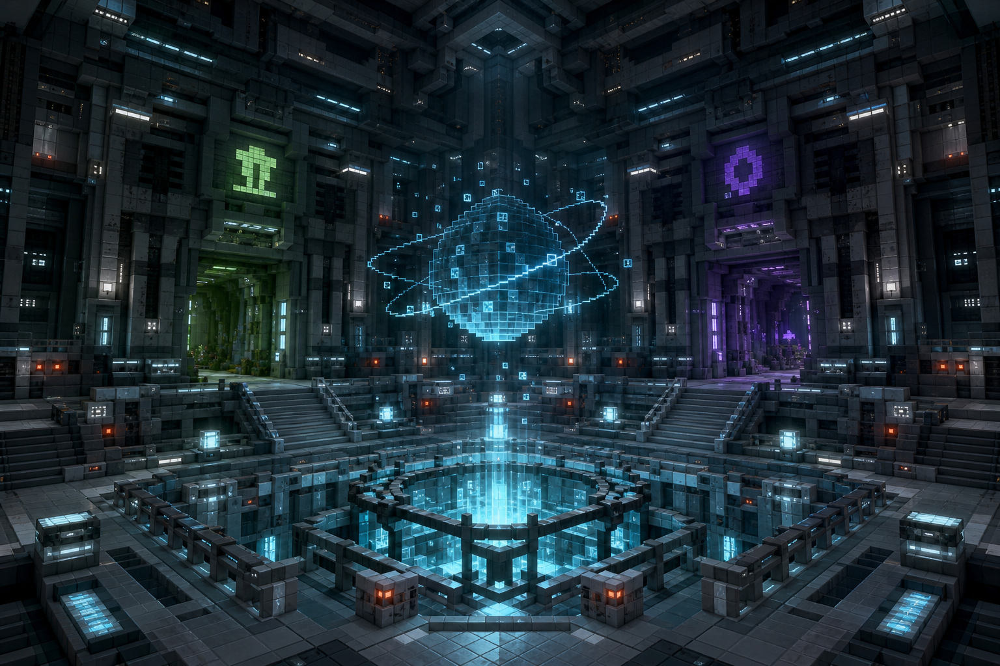
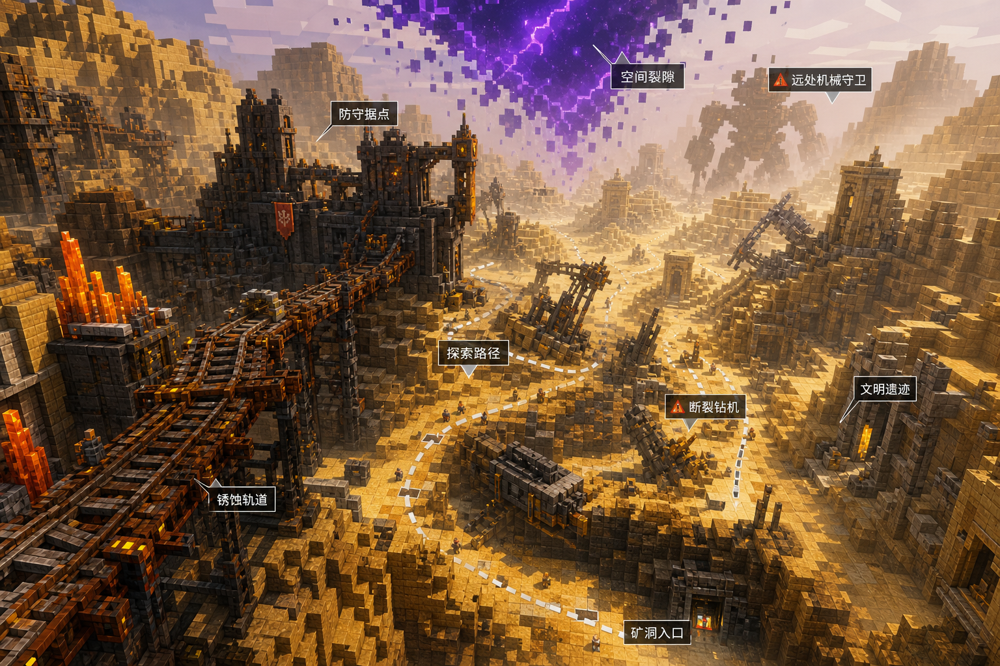

STELLARIS代号 · 星郡
从一座生态舱开始，重建一片星海
我们漂泊在破碎的星域，为文明寻找下一片可以靠岸的星空。
星海航路崩塌后，最后的幸存者乘坐方舟主舰 STELLARIS，漂泊于破碎星域。
经营你的 生态舱，穿越 空间裂隙，为主舰寻找 延续文明的资源 与新家园。
这不是一场远征，而是一段被妥善安放的时间。每个玩家都是开拓者，每座舱体都是文明的火种。
在核心熄灭之前，为文明找到下一片星空。
生产 · 归属 · 远征

世界的 三层骨架
独立生态舱
玩家空岛。既是住所，也是小型生产基地。从有限资源开始，恢复物质生产、农业循环与能源储备。
方舟主舰
幸存者文明的中心。承担生存中心、公共中心与剧情中心三重职责，主舰进度即文明存续进度。
空间裂隙
副本区域。通往失联星域，可能藏着异星文明、废弃殖民地与失控机械，是获取稀有资源的唯一途径。
一日星舰 运行日志

ECOSYSTEM POD · 标准生态舱一座舱体，一座世界
物质重构器
从空间残留物中生成基础材料，是空岛生产的核心设备，无法直接产出高级能源与完整科技。
农业循环
建立自给自足的食物与生态循环，维持开拓者长期生存所需。
能源储备
有限能源的规划与储存，决定舱体稳定度与可扩展范围。
自动化设施
通过裂隙带回的机械部件，逐步实现生产流程的自动化升级。
舰内五区 · 文明中枢
能源核心
主能源核心持续衰减，是全服最紧迫的修复对象，其状态代表文明存续进度。
任务中心
发布主舰委托、管理文明资源贡献，衔接个人生产与全服目标。
公共大厅
交易、组队、科研与社交的中枢，幸存者文明的公共心脏。
文明档案
保存断航日档案与最高权限封锁的记录，是长期悬念的钥匙。

STELLARIS · 中央大厅与能源核心穿越裂隙，触碰未知

失落星域的第一道裂隙
由远征小队深入探索。裂隙另一端拥有明显不同的环境与文明痕迹，蕴藏修复主舰所需的星核碎片、异星种子与机械部件。
系统识别色 · 设计规范
配色比例
舰体底色 72% · 冷灰白 18% · 系统识别色 7% · 警示色 3%
材质语言
拉丝金属 · 枪灰合金 · 老化但不失秩序 · 低照度高光
文字字体
方块几何 · 编辑克制 · 英文标题 + 中文信息分层
信息克制度
先让画面建立气质，再让文字补充意义 · 拒绝塞满
从苏醒到 远征
基础生存循环
生态舱部署、物质重构器 Mk.I、基础建设，让玩家理解"我的空岛是一座生态舱"。
Mvp · 生态舱落地主舰委托与公共进度
主舰任务、资源贡献、文明存续进度条，让玩家把产出交还共同体。
主舰修复工程首次裂隙远征
荒芜矿星裂隙开放，远征小队制度，引入稀有资源与异星科技。
第一道裂隙升级与自动化
物质重构器 Mk.II/III、自动化设施、舱体稳定度扩张。
技术阶梯主舰跃迁 · 赛季更替
主舰完成修复并跃迁至新星域，解释新副本与主城变化。
新空域降临完整世界观，沉淀于 档案库
深入浏览星郡的世界观 Wiki 与设定图鉴：三大空间全案、世界运行四规则、开拓者图鉴、稀有资源档案、失落文明记录。